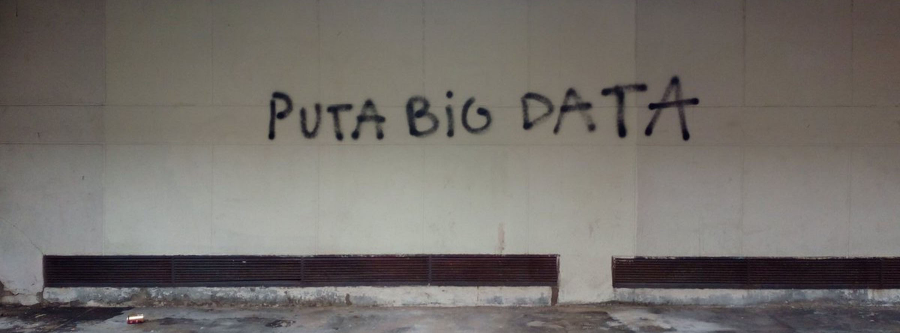

Projects
As you can see in the academics page or in my linkdin, my degree is in the field of Electronics Engineer. For ten years I've worked on the Nuclear Sector. An introduction to the field in the Nuclear Reactor RA-10 in de UNC. And some formative years in the Instrumentation Sub-gerency, working for the RA-10 project. In the last years I been getting into the DevOps culture. I have found in this culture some quality concepts (CI/CD), Development of tools like Docker, Kubernetes, Cloud computing, networks administration in the cloud and linux based systems new rosources that intrigue me. I hope to work with you or that some of my projects are helpfull to you.
DevOps/App Web Dev
Front (HTML/CSS/JS)
- Test animation: Some animation with playing with canvas element in JS
- Coordinación Mano Ojo: Simple game in JS.
- Personal page: This web design is from html5up and is hosted on github pages.
- Box chronometer: Simple box chronometer (Gitlab).
- Form Front: Front for form (FCC).
- Timeline Jáuregui: Timeline for Carlos Jáuregui (FCC).
- Random User: Load random user from 'https://randomuser.me/api/'
HTML
CSS
JS
Bootstrap
Angular
Ionic
Apache Cordova
Frameworks-Backend (Ionic/Angular/EJS/Nodejs/MongoDB/Firebase)
- Blog Web App V1: Blog as a final project for http://www.teczara.com/ WebApp Development course. Uses: NodeJS, EJS, MongoDB
- Blog Web App V2.0: Blog as a final project for http://www.teczara.com/ WebApp Development course. Uses: NodeJS, Angular, Ionic, MongoDB
- Blog Web App V2.0: Blog as a final project for http://www.teczara.com/ WebApp Development course. Uses: NodeJS, Angular, Ionic, Firebase
- Personal page docker-compose: This page but getting it up with docker-comopse and NginX 1.20 image.
NodeJs
Python
MongoDB
Angular
Ionic
Apache Cordova
DevOps (Bash(Python/Docker/K8S/Terraform)
BASH
Python
Docker
K8S
Terraform
CI/CD
Jenkins
Prometheus
CircleCI
Nuclear Instrumentation - RA-10
State-of-the-art national technology for health, science and industry
Nuclear design for the safety system of the Nuclear Reactor RA-10 in CNEA. Safety analisys. Embedded electronics.
c#
embedded systems
nuclear safety
critical systems
Nuclear Reactor RA-0
State-of-the-art national technology for health, science and industry
Nuclear design for the safety system of the Nuclear Reactor RA-10 in CNEA. Safety analisys. Embedded electronics.
c/c++
embedded systems
nuclear safety
critical systems
https://www.argentina.gob.ar/cnea/Tecnologia-nuclear/reactores-de-investigacion/ra-0